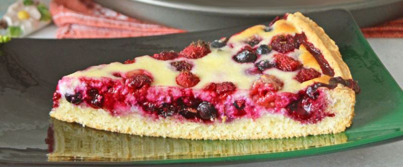

Земляничный пирог

Поставить разогреваться духовку на 160 градусов.
Для теста смешать яйцо с желтком, 1 ст. сахара, ванилин, 150 гр. топленого сливочного масла и 300 гр. муки. Хорошо все вымешать. Взять форму для выпечки, выстелить пергаментом, смазать сливочным маслом, сформировать из теста ладонями корзинку в форме.
Для начинки взбить 250 гр. сметаны с 2 яйцами, 75 гр. сахара и ванилином, аккуратно вмешать в получившуюся смесь 2 ст. земляники (можно с черникой). Вылить начинку в корзину из теста, поправить края корзинки, чтобы они выступали примерно на полсантиметра. Выпекать час в разогретой духовке. Подавать остывшим.